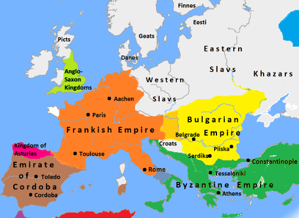
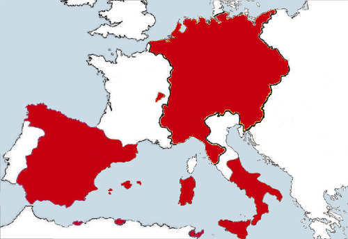
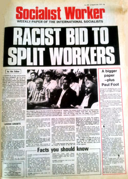
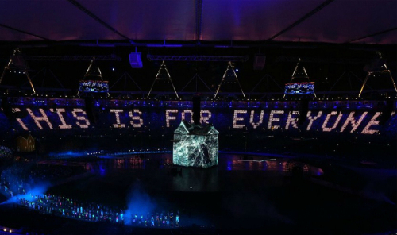
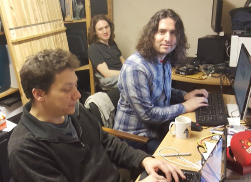

Rome Vs The Matrix
I would like to tell you a story. This is a story of how we the British people, and we the planet, got here and more importantly where we should go next. It is still a work in progress. If you are of a like mind, please help me to improve it. [1]
Dogglerland
After the last Ice Age, Britain was certainly a part of Europe, the Thames and the Rhine met and Woolly Mammoths and later people walked across to Britain.

However, God decided out of wisdom or for a joke, that Britain should be an island and smashed the land bridge with the Hammer of the Waters [2].
Of course, throughout history, idealists have been trying to glue Britain back onto Europe, without much success.
However, this unavoidable geological and geographical fact remained and still remains, and it gave us a very different history to the continental peoples of Europe. I think it also gives us a very different future.
Rome DOS

Julius Caesar’s made expeditions to ancient Britain in 55 and 54 BC, it was the beginning of a pattern. The Romans could enter Britain and conqueror territory, but they could not hold it.
Whether is was Boudica, the Iceni queen who burned down the Roman settlements at modern day Colchester, London and St Albans; the inability to make progress in the North, modern day Scotland, Wales or Cornwall; or countless other defeats; the Romans never achieved a stable position in Britain.
Roman Britain existed within its urban colonies but despite a massive investment in infrastructure, such as the famous road network, conquering Britain was never a serious enough priority to divert the required military forces to subdue the people of Britain once and for all.
Roman officials and retired veteran troops settled in Britain had a tendency to go native and side with the locals over Rome, not least for survival, intermarriage with local tribes brought more security than the Roman state, which was more annoyed than responsive when the frequent requests for rescue came. After a few hundred years of half-hearted efforts of colonisation, Rome stopped answering altogether.
Charlemagne and Rome 3.11
However, in Europe, despite the collapse of the Romans, the Byzantine and Frankish Kings were trying to recreate and hold the Roman Empire, Charlemagne being the most famous, he conquered a good part most of Western Europe.
For those on the continent, they have a 2000 year process of recreating the Roman Empire. However, we were barely in it to start with, and haven’t joined since.
While Charlemagne was winning battle after battle, back in Britain, something very different was happening. As the Romans had faded out, the Saxons faded in, it wasn’t very long before the Mercian Supremacy united England under the Saxon Kings and their capital of Tamworth.
Normandy
William I, also known as William the Conqueror, the first king on the back of the space-limited 1 foot rulers traditionally given to British schoolchildren, was cousin and in his own mind at least, heir, to the previous king Edward the Confessor.
With the arrow through King Harold’s eye, the Anglo-Saxon era of Britain had ended and the Norman age had begun.
Despite Northern France being their ancestral homeland, the Norman Kings and their Tudor descendents failed to hold together England and France, losing Normandy and the rest of their homelands to the Franks.
They had more luck in the westerly direction, conquering the various little kingdoms in Ireland by war and marriage, while Henry VIII managed to create a peaceful union with Wales. However, all attempts to secure a legal heir either by legitimising his son Henry FitzRoy or divorcing required permission from the Pope.
English Independence from Rome 95
The Pope had bigger problems than pleasing the English (and Welsh and Irish) King, Emperor Charles V was once again building a united Europe. Grumbles about papal rule and (in practice) subservience to the Holy Roman Empire had been bubbling for many years in parliament over a range of issues, but the international marriages of the King had always meant the monarchy was a limit to how far parliament could act.
Now with the King on the side, the Acts of Supremacy was could be passed, meaning the King and the secular parliament would now rule the Kingdom, the role of the Church was confined to moral matters alone, and England was no longer seen as a minor partner or dependency of the Holy Roman Empire.
This also enabled union with protestant Scotland, and James VI of Scotland became James I of England. Despite the movie of the evil English killing poor blue painted Mel Gibson and the moans of today’s Scottish nationalists, it was actually the Scottish that (peacefully) conquered England.
The United Kingdom was now a confident and powerful country. Freedom of thought led to the industrial revolution, which we will come back to later.
Catholic Europe and its supporters did not take this lying down, England was still a valuable prize to add to a European empire. The Spanish Armada was the most famous failed attempt at an invasion, and the Gunpowder Plot tried to blow up parliament with James I inside.
Two last attempts at UK-European integration
A more consensual(ish) attempt of European integration was when parliament invited William of Orange to become the King William III and so he did. For a brief period it seemed like the United Kingdom and the Netherlands would become one country. However, William was childless when he fell of his horse and died, and each Kingdom had different rules over the succession, and that was that.
Next in line was his sister in law, Queen Anne, the last truly English monarch. Under her rule there was a major humanitarian crisis on the continent. King Louis of France decided to commit genocide against the Huguenot people and wipe them out in a series of massacres, half a million left France in a giant exodus.
Queen Anne opened Britain’s borders and 50,000 Huguenots moved here. Queen Anne’s new immigration policy was simple, anyone who turned up and pledged allegiance to the Queen was immediately part of the British population.
The open border policy lasted for hundreds of years. The barriers were only put up fully in the late 20th Century, when we were already in the European Union.
Anyway, like William, Queen Anne also died childless. What happened next is quite interesting. Parliament chose the next King from a list of potentially suitable Princes and Princesses. They settled on George of Hanover, the 58th in line to the throne and non-English speaking.
We were now in a union with a mid-level German principality, but like all our other European alliances, it broke down and it eventually the Kingdom of Hanover became part of the German Empire.
Britain in the World

By now Britain had lost interest in European affairs, we were part of a global Empire on which the sun never set. Lots of terrible evil things happened, which everyone talks about but also some good things, which people don’t talk so much about.
On a purely economic level, the Empire was a giant mistake. What started as an attempt to get a set of sustainable safe ports ended up covering a quarter of the world. It was the industrial firms of the UK that had to subsidise the infrastructure of Empire building, and as other countries got their industrial revolution, the sums no longer added up.
If we had just defended these ports, and given countries their independence quicker, would they have been more free? Or would an even less benign European power have swooped in and taken them?
Anyway, the Empire and all its good and evil and idiosyncrasies happened. The Commonwealth is there? Why do we ignore it?
We discovered medical treatments and we started Canada, Australia and New Zealand. From a small patchwork of feudal kingdoms, we united India - against us of course - but now it is one of the greatest countries in the world.

Obviously we cannot take credit for India’s hard work but we did leave them the world’s largest railway, Westminster-style parliamentary democracy and the English language which they are using brilliantly to trade internationally, they are the winners.
The Commonwealth is the growing part of the world, the 21st century is their century. Why shut them out just to stay in a club of losers? Lets get stuck in and help the Commonwealth countries develop. The old masters can become the servants, lets not be too proud and have some humility.
The Empire was not a one way street, we learned a lot from the Commonwealth peoples. We got tea, carpets, colourful patterns and new artistic and musical forms, new philosophies and our national obsession with curry.
By being exposed to the world, the values of the British people started to change. We realised that people were not so different. We went into the world as gold-hungry pirates but started coming back with new values.
The Society for Effecting the Abolition of the Slave Trade started from those who had gone out into the Empire and not found blood thirsty savages, but instead found friends and lovers, decent human beings. To make sense of it they went back to the New Testament notion that God made all men are equal and all men are our brothers.

This came to a head when the great Christian leader and parliamentarian William Wilberforce led the social and parliamentary campaign to abolish slavery.
Since everyone is our brother and sister, all men should be made free of slavery, oppression and poverty and it is our responsibility as human beings to make it happen, to bring freedom to the world. Not wait for the oppressed to take back their own freedom, it is everyone’s job, especially the advanced country that is Britain.
This sounds simple and obvious now, but in the late 1700s this was a radical idea, the first time it had been exposed.
It is an unavoidable historical fact that this was a British (and Dutch) movement. During this period, Germany and much of continental culture was going in a totally opposite direction, building the foundations of fascism.
I don’t say this for nationalistic reasons but to point out that human rights did not start because of the EU. We were already starting to take a first step down this path three hundred years ago.
Maybe this is why God brought the hammer down on Doggerland, to give us a more global perspective. Once you have built a boat to sail to Europe, you can use that same boat to explore the world, then you find that everyone is a human being.

The last patriot
American Independence is today framed as a fight for freedom, Mel Gibson being killed (again) by the evil English, and to a large extent that is accurate. However, what they don’t like to mention is that one of the factors driving American Independence was a fear among American slave owners that Britain was going wobbly on slavery. They were right, we were.
What is also true is that the newly independent America went backwards on the rights of Black people and native Americans for the first 50 to 75 years.
One thing that the British navy based in its territory in Canada liked to do was to go down to plantations in the American south and rescue slaves, many thousands of whom settled in Canada and in the UK.
We should have done more. We should have freed every last slave, even if it meant abolishing the US government and killing Mel Gibson a third time. All people are equal. Those who are oppressed we must help.
All Britons got free healthcare in 1948. If you are black in America today you are three times as likely to not have decent health insurance than a white person. America was 75 years behind us in 1800 and it is still 75 years behind now.
Therefore, this is not the time to import the US health care system via TTIP. Sadly, the EU has it on the cards and we cannot escape it while being a member. If you or your family has what the Americans call ‘pre-existing condition’, then expect significantly worse and more expensive healthcare than we have now.
I actually love Americans and American culture. I hate their war mongering governments. I love San Francisco and hate Washington DC.
We should have free trade with America, but at the moment the American government is only offering take or it leave it terms. I think we should leave it.
I also dislike the idea that to criticise the American government is a problem. I don’t want to live there. I don’t want UK to become America either. I don’t want their ideas about private healthcare, GMO foods, Fracking or a culture based on the ownership of guns.
Rome XP: World War I
When Napoleon tried to create a united Gallic Europe, we were going to lose our essential pit stop of Malta and possibly lose access through Mediterranean, as well as our allies being attacked.
So we popped over the channel and put Napoleon is his box but lost interest afterwards. As we saw above, we long ago lost interest in holding possessions on the mainland of the continent.
So after Napoleon, it was still France that was seen as the potential trouble maker. In general, in the 19th Century, Relations between Britain and Germany were very good. Back then Britain still believed it was a Germanic people, the Anglo-Saxons, and we had our recently imported German kings. All that was deliberately and rapidly washed away in the build up to World War II so it is quite hard to comprehend now.
Our main priority was always free trade routes, as long as we could go past Europe through the Mediterranean, we didn’t want to interfere in the continent and they didn’t want to interfere in our empire, we just wanted happy neighbours.
However, while we were sailing off around the world, causing chaos, building railways, drinking gin and rethinking what it was to be British and human. The Europeans were still trying to make the Roman empire. They couldn’t agree if it would be a French empire or a German one but now they had better guns which spiralled into World War I.
The Austrian Franz Ferdinand was assassinated by Serbia. The UK tried to make France and Germany just get along. They didn’t listen. Politicians and generals on both sides decided this was the perfect excuse to defeat the other and become the new Roman empire.
When German and France started fighting, we still tried to calm it all down. The problem was that Britain a had given security guarantee to Belgium in 1839, not sure the UK even remembered but the Belgians did. So when on the 4th August 1914, Germany troops marched through Belgium to attack France, the guarantee was triggered.
The British public was totally confused, weren’t we a Germanic people? Isn’t France the country of Napoleon? Aren’t France the bad guys? Why do we even care about Belgium anyway?
In the confusion of complex European politics, to the government honouring the deal with Belgium seemed like a precise and specific aim that didn’t require a master plan for the continent.
The government decided it could clear out Belgium and be back home in a week, back home in time for Christmas, back home in time for New year...
We went into World War I as a naval power with little recent experience of fighting warfare on land against an equally advanced enemy. Sea battles against an inferior foe last a day or two, maybe a couple of weeks.
The War dragged on for 4 long years and we lost a million of our best and brightest people for no gain whatsoever. Progressive social changes started going backwards. Long promised reforms and freedoms promised to Ireland were delayed by the war and we lost them. We bankrupted ourselves and started to lose the whole Empire. We even killed Mel Gibson again at the incompetently run campaign at Gallipoli.
France continued Empire building in the Treaty of Versailles, trying to guarantee a permanent superiority over Germany. The UK delegation, “the Heavenly Twins”, bankers who were brought in as “worthy finance experts”, despite advice from Keynes in the Treasury to prioritise making sure post-war Germany was viable and don’t worry about making money, decided it wanted a huge pile of money out of Germany too.
If only people today would learn to ignore bankers and ‘worthy’ figures of high finance and listen to Keynes, maybe we would not have the financial crash, the Greece crisis, or in fact World War II.
Rome 7 - World War II
Between the wars, America had started to make aggressive moves against Britain and its empire, so wasn’t even looking at Nazi Germany. If any threat loomed it was from those evil red communists in Russia.
Britain likewise hardly noticed, struggling to deal with colonial demands for independence.
When the first moves in Hitler’s game started, many assumed it was just a corrective to the Treaty of Versailles. Maybe partly it was, but Hitler had got the taste of momentum and was never going to stop.
Hitler, like those before, wanted his own version of a united Europe. Mussolini even used the Roman symbolism directly.
Hitler called Charles V’s Holy Roman Empire (see above) the First Reich. Bismarck’s Prussian Empire was the Second Reich, and Hitler’s own rise to power was the Third Reich, the third German attempt at a pan-European state (ignoring all the other attempts).
This time, it really could not be ignored. Hitler’s grand vision of a united Europe left no room for anyone else, whether internal minorities such as the Jews, or external powers such as Britain.
Germany was the master race, a white Europe united under one government with white troops wearing even whiter shirts.
Britain stood alone against Hitler!
Erm well no. Not really at all.
Forces that the UK fielded were a multi-racial bunch. As well as my Granddad and other British residents and thousands of Australians and Canadians, we had 2.5 million Indian volunteers, we had a Burma Division, a Fiji Infantry Regiment, the Royal Malay Regiment, the Arab Legion and Africa sent six whole divisions of black African volunteers. It goes on and on.
In the following image, comrades look on as a West African soldier is treated by doctors. Many thousand Africans and a million Indians died for our freedom.

Despite all the injustices, problems, disagreements, desires for independence, etc, when we needed them, the Commonwealth was there for us. We wouldn’t even have a UK if it was not for them.
Oh yeah and even the Americans came. Eventually. Thanks. We love you. God bless America.
The multi-racial international British Commonwealth and America beat the white European master race and their all-white allies because all people are equal, all are valid, and all have something to contribute. You don’t have to live in Europe to be valuable.
In 1972, the UK was still not yet in the EU so our borders will still largely open to the world, as they had been since the days of Queen Anne.
Independent Uganda decided to expel all 50,000 of its citizens from Indian origin. 27,200 of them settled in the UK. It wasn’t all easy, there was a lot of racism from the right and support from the real socialists, but they thrived here and like the Huguenots, they became an essential part of the UK population.
The Socialist worker at the time tried to explain to the British people they had nothing to fear:
It is the racist financial elite and the mainstream media that tries to people of Britain against our cousins in the Commonwealth, and they still do it today.
The Guardian is nice, it has a handy app that means I can read it on the toilet, but it is not a left-wing paper, it is a right-wing mainstream media paper like the rest. This is the age of the Internet, diversify your information.
Rome 10 - The European Union
A factor in the wars between France and Germany is that the bordering areas are rich in natural resources. Sharing them helps to prevent arguments which makes peace. In this context the post-war European Coal and Steel Community makes a lot of sense. But Britain has never dug the Ruhr. It doesn’t mean anything to us.
Brussels is the mid-point between France and Germany, good location for them but it doesn’t mean anything to UK except the site of some stupid unnecessary wars between France and Germany where our grandparents and great-grandparents suffered. We did not need to join the EU to stop us conquering France or Belgium. UK has been finished with that since 1534.
So the fact the symbolism of the EU means more to France and Germany and means little to UK, doesn’t come us much surprise.

The EU used to be like a benign attempt at a Roman Empire, but it has become increasingly hostile to its own people, see what happened in Greece, and it is increasingly out of step with British values, go read about TTIP. Read about the Viking Line labour dispute. The EU has long ceased to be a progressive force, if it ever was.

It has a centralised, proprietary setup where the only people that can influence decisions are yesterday’s multinational corporations. It then puts a phoney parliament on top as a democratic fig leaf. The European ‘Parliament’ has two fancy state of the art buildings that it shuttles between. What it cannot do is make any new laws or repeal any old ones. Only the unelected Commission can write new laws, as for repealing laws, there is not a system for that. What a joke!
In 1999, I was an undergraduate with a giant EU flag on the wall of my dorm. I read all the propaganda, went on all the trips. I wrote essays saying while the EU was currently undemocratic, bad for the environment, and bad for the developing world, it would be fixed soon. It wasn’t. All we had to do was co-operate and wait and it will reform. It didn’t.
I even waited in the Snow in 2002 outside the Bank of Finland to get some of the first Euros. What a mistake the Euro was, it has bankrupted Greece and left many of the young people of Europe without a hope of jobs.
Those who funded the Remain campaign are the same people that caused the financial crisis of 2008: Goldman Sachs, Merrill Lynch and J.P. Morgan. They are not our friends or allies.
Much is made to dismiss left arguments for exit because Nigel Farage wants exit. Whatever one may think of him, he has never held power to hurt anyone and never will have power. Meanwhile, Remain’s George Osborne has had power and used it to take money from disabled people and give it to the same billionaires that are backing remain.
Then we come to Remain’s Tony Blair.
Britain in recent history didn’t start wars or kill people, yay! We had finally learned from our past mistakes. That is until the lying warmonger Tony Blair came along.
My own faith in Britain took a massive nosedive then and probably hasn’t recovered, maybe it never will, it is now the cyber-internationale or nothing.
Blair is responsible for choosing to start a war which has killed up to a million people. I will not stand with him and I will probably not agree with him on anything. When you take the same side as Blair, I see you as a right-wing Blairite, I do have to admit that. You have to to, you are one. It is better to be honest that you are right of me.
I am not a European. I am British and I am a human and like Wilberforce, I believe being a human is the more important fact.
I don’t see the need for any layers in between.
I believe that a Kenyan or an Indian or an Australian or a native American is as equal to a Bulgarian or a Hungarian.
The EU means that someone 1000 miles east of me has equal rights to me in the UK but someone 1000 miles south of me has none. I find that completely arbitrary.
The real truth is that European countries are all white, that is the only unifying factor. That is a racist way to order the world.
There is a lot of middle-class European nationalism, as if it is an acceptable form of nationalism, and an acceptable form of racism. It is not. To me it just seems like the last 2000 years of re-making the Roman Empire.
Moving on from being a little Englander is not be a little European, it is to be a citizen of the whole world.
There is a lot of middle-class sneering at the out campaign, that it is full of racists and not the right kind of educated people in the Remain campaign. A racist with a degree is still a racist. The remain campaign is equally racist. Just one step zoomed out. They are still putting up trade and immigration barriers to everyone who is not in the arbitrary group of 28 majority-white countries that is the EU.
If you don’t have a degree, if you are a normal working person sick of the sneering; I have three degrees, you can imagine one of them is yours. They don’t mean anything here. Your voice is equal to the most loftiest expert. Stick to your beliefs. RMT, ASLEF, BFAWU and other Trade Unions supporting Leave know as much, if not more, than the forces of neo-liberal capitalism.
The fact is the Europeans don’t have the Commonwealth history and the relatively happy race relations we have in the UK. We have a different history. That is fine. Let them get on with their Rome building.
Britain can leave and rejoin our Commonwealth and the rest of the world. If Rome 10 still wants to trade with us afterwards, fine, if not fine. We have a massive balance of trade deficit with them anyway so not having a trade deal would both hurt and help us. For Rome 10, not having a trade deal would only hurt them.
Why do you think we have a massive balance of trade deficit with the EU in the first place?
If you remember, the Commonwealth is a group of ccountries whose citizens had stood up and died for us in the war. Before we joined the EU, we put had trade barriers with to the Commonwealth. We had a complementary relationship, we sold them cars and machines and they sold us food, carpets, clothes, tea and so on.
We used to eat cheap food grown without chemicals in the hot sun in Australia, Africa and India. Now we eat expensive pesticide covered fruit grown in heated greenhouses in the low countries. Next up with the EU’s TTIP, we are going to eat American GMO and hormone treated foods, God help us.
We turned on back on the Commonwealth to join a group of similar economies in Europe. We tried to out German the Germans and failed. Why would Germany need to buy our cars or advanced technology? It can make cars itself and often better.
Putting up trade barriers to complimentary countries was a mistake. We cannot all do the same thing. We cannot all do everything. We all live on one planet and we all do best if we all work together.
The Information Age
After the Scottish and English reformations, we had growing freedom of thought and expression, without which the technological and scientific discoveries of the industrial revolution would not be possible.
The machine, from a simple lever to a super computer, magnifies human activity. We have combine harvesters, medical equipment, airplanes. This magnification in productivity has the potential to bring food, health and wealth to every member of our species.
We also need to think about our planet and the other species we share it with.
In this informational age, the EU has nothing to offer, it just wants to bring in software patents so yesterday’s innovators can have monopoly rent. Where is the European Google? Why is all the innovation happening in America, India and China?
The Neo-liberal sweatshop agenda
So far the fruits of the industrial revolution, and now the information revolution, have not been shared very fairly.
There is this horrible propaganda: “immigrants do the jobs British people are not willing to do”.
Existing residents used to be happy picking vegetables, doing factory work, doing care work. These used to be fairly paid secure jobs. People doing these unskilled jobs could afford to buy a house and all the essentials of life.
They did not suddenly become work shy. What happened is that secure contracts were replaced with insecure agency work with serf-like conditions. Local people cannot afford to take them and still raise their families. If your family is abroad where the living costs are lower, then maybe you can make it work but you are still being exploited.
If it is not good enough for a British person, it is not good enough for an Eastern European. Building our economy on the exploitation of Eastern Europe is no more ethical than building an Empire on the backs of Africans and Indians.
This was a choice, none of this happen by accident, it was designed to happen, and the forces of neo-liberalism are becoming very rich because of it.
The stupid thing is that companies with well paid workers in safe conditions using machines, lose contracts to cowboys hiring mass numbers of workers in unstable situations, both here and abroad. It is a technological de-evolution.
Enter the Matrix
Progress goes backwards but it also goes forwards again. Even if temporarily a sweatshop is cheaper than a machine, we can make more productive machines. If an industrial process makes pollution, we can make cleaner machines.
The future of our species is not about providing low paid insecure work, it is about using technology to automate and make work productive enough that we can give everyone decent and fair conditions.
We need more automation, more machines, and yes more developers writing software to run it all.
In the Terminator movies, the real hero is not the gun toting Sarah Conner, it is Skynet. In the Matrix, the hero is Agent Smith.
I don’t want to make Rome, I want to make the Matrix. I want us to work with the whole world and help give them all food, clean water, healthcare, computers and freedom.
The real conservative forces of high finance, the same guys that run the mainstream media and control the EU, of course want to convince you to remain. For me, it is part of the problem, not the solution.
Maybe we don’t leave this EU this week, I hope we do but the polls are not looking good, people are accepting the Goldman Sach’s funded messages. David Cameron won two referendums already using his anti-progressive project fear. I can believe he can win this one too.
However, we will leave in the end, it is just a matter of time, and we will not be the only ones. Across Europe, people are waking up. We don’t need a centralised proprietary government in Brussels to work together across borders. People are coming up with new models for open source government and distributed co-operation. We have just got to pull the arrow of neo-liberalism out of our eyes.
A spectre is haunting Europe - the spectre of technological utopianism. The idea of socialism has existed for a long time, but only now are we finally getting to a technological level where it can become possible.
Lets make it happen.
| [1] | The realities of our economy is that I must write software in order to eat, therefore this discussion is not as polished as I may like but I thought I would get it out before the vote. |
| [2] | George R. R. Martin’s A Song of Ice and Fire series is based heavily on British History, in his version, the elf-like children of the forest bring down the “Hammer of the Waters”, splitting the known world into two, in a desperate attempt to stall the invading humans. |
The Case of the Pirate Gamepad
I made some software (which will be explained in a future post) and used my trusty Argos third-party PS3 style gamepad to control it.
On the way to open sourcing it, I thought I had better try it with a an official Sony PS3 gamepad, and I could always do with another gamepad for when playing computer with the sprog.
We play a lot of open source games like SuperTuxKart and Frogatto which are two of our favourites. To be honest we play almost every game made available through Debian’s Apt.
So not really thinking too heavily about it, I popped onto a leading auction website, typed in PS3 gamepad, saw that the first result cost less than £13 including postage, and just bought it and moved on. Total time spent was about a minute.
Later I thought it was a bit cheap but ignored the thought on the basis that the PS3 is ten years old and has been long replaced by the PS4. The controller that game was the one above. In the following box.
Initial impressions were that it was a little light and the D-pad was different than I remember. However, it is probably been 5 years since I touched an official PS3 gamepad and maybe they made production improvements to make it lighter or I didn’t really remember right.
However, as soon as I plugged it in, and typed dmesg, the controller itself confessed to its real identity.:
usb 4-2: new full-speed USB device number 24 using uhci_hcd
usb 4-2: New USB device found, idVendor=054c, idProduct=0268
usb 4-2: New USB device strings: Mfr=1, Product=2, SerialNumber=0
usb 4-2: Product: PS(R) Gamepad
usb 4-2: Manufacturer: Gasia Co.,Ltd
input: Gasia Co.,Ltd PS(R) Gamepad as /devices/pci0000:00/0000:00:1d.0/usb4/4-2/4-2:1.0/0003:054C:0268.0010/input/input41
sony 0003:054C:0268.0010: input,hiddev0,hidraw3: USB HID v1.11 Joystick [Gasia Co.,Ltd PS(R) Gamepad] on usb-0000:00:1d.0-2/input0
A Gasia Co.,Ltd PS(R) Gamepad, what is that you may ask? Well so did I. It should look like this:
usb 4-2: New USB device strings: Mfr=1, Product=2, SerialNumber=0
usb 4-2: Product: PLAYSTATION(R)3 Controller
usb 4-2: Manufacturer: Sony
sony 0003:054C:0268.0008: Fixing up Sony Sixaxis report descriptor
input: Sony PLAYSTATION(R)3 Controller as /devices/pci0000:00/0000:00:13.2/usb4/4-2/4-2:1.0/input/input18
sony 0003:054C:0268.0008: input,hiddev0,hidraw0: USB HID v1.11 Joystick [Sony PLAYSTATION(R)3 Controller] on usb-0000:00:13.2-2/input0
The controller was totally fake!
So it didn’t help me generalise my software. Also these controllers contain a Lithium battery so I am not comfortable putting this counterfeit device in my child’s hands. If they are so far beyond the legal system that they do not need to care about the trademarks of Sony, how much do they care about electrical safety? Or chemical safety?
So I emailed my findings to the seller and they gave me an immediate refund and didn’t need to send the controller back. A counterfeiter with great customer service! Bizarre.
It is amazing the level of detail they went to. It is itself an interesting cultural artefact; a Chinese made plastic product pretending to be a different Chinese made plastic product. It is interesting philosophical discussion about if you use the same design, make it in the same place and maybe even use the exact same parts, what does genuine actually mean?
And what the heck is the markup on the official Sony controller if another company can make an almost exact replica for a less than a third of the price?
It is shame that people feel the need to be dishonest. A third party PS3 controller does not need to hide its true nature. I love my Argos one which has some useful extra features.
Surely selling the controller as what it is would be simpler than having to sneak around and recreate accounts constantly on the auction site?
If the manufacturer had said, “this is a PS3 compatible gamepad and it is three times cheaper”, then it could find its own market. While you are at it, put in a higher capacity battery and better bluetooth aerial than Sony’s controller and win on both price and quality.
As for me, I bought an official wired Xbox 360 controller from Argos. I actually prefer the shape ergonomically and it is more reliably detected by Linux and is much cheaper than the PS3 gamepad.
Building up Skynet
This has been a very exciting year. I burst out of the academy and started a new company with a couple of other chaps called Rob and Luke.
The idea is write a platform to help generate form-based applications, which could absorb and display business data. We could then in the future add machine learning/artificial intelligence type features, and learn original ideas that have not been apparent without such statistical modelling.
Basically we are trying to make Skynet, the singularity itself, which we call Infomachine. Of course, being a start-up, it might evolve into a different concept involving washing machines or something.

Meanwhile, some customers found their way to us and we have been doing lots of consulting and contract software development. The customers themselves are highly intelligent and beautiful people who have extensive domain knowledge in their own field, and it has been very interesting learning some of this as we write software to make their companies more efficient or expand into new areas.
This all feeds back into the eventual completion of the Infomachine, or not; maybe we will go in a completely different direction, that is the fun part, there are just three of us in a (often virtual) room and we can do whatever the heck we like.
Everything is just C with bells on

In this post I thought about the world of cool that lies between high-level languages and C. Thought is too strong, it is more of a seed of a thought that has not germinated yet. This is not a fable with a moral at the end.
When I first came across C#, I thought that is much better than Visual Basic, perhaps Microsoft’s .Net platform could be interesting one day, but not personally having an obvious project to use it in, I put it to one side and have never touched it since.
When Vala was first announced, I thought wow, that is so sexy and I played with it for about a week. Not personally having an obvious project to use it in, I put it to one side and have never touched it since.
I had pretty much the same reaction to Go (aka golang) - wow that’s cool, perhaps not as sexy as Vala but I like the goroutines. I did the trendy web based tour, I installed everything locally and played with the standard library. Then, not personally having an obvious project to use it in, I put it to one side and have never touched it since.
I could go on and on. Whatever piece of tech that comes into (or back into) fashion seems to follow this pattern, Haskell, Erlang, Java, Scala, etc etc. A lot of the developer tools industry and technology media needs something shiny and new to promote this year.
Don’t get me wrong, I love all this stuff, I would love to do projects in different programming languages but obviously, as I have a reputation for writing Python or JavaScript or doing system administration, people hire me to do that and don’t perhaps think of me for other things.
Maybe there is more too it than that, since in whatever I am doing, in my head I seem to think of any algorithm in Python first as executable pseudocode even if it gets typed in using JavaScript or another language.
I had a long stint as an academic, but basically my whole career in software is as a freelancer or contractor. A journeyman who works to live.
Often the customer has an existing project or specific library, toolkit or team which pre-determines the choice of programming language.
Otherwise, my usual process for creating software is to prototype it in a high level language (normally always Python but sometimes JavaScript). 90% of the time, once it works the customer has solved their immediate problem and wants to move their focus onto their next problem, which may not be software and may not involve paying freelance programmers. Sad I know, thanks for all the fish, I am here, like the song says, etc etc :)
When the prototype is working, there is a lot to be done to optimise it and keep it as a Python application, and almost always there is some specific other bottleneck (such as network, database or some industrial requirement) that means that CPU usage is not the problem and so cutting out the Python interpreter wouldn’t actually make much difference in the short and medium time-frames that most companies care about.
Indeed I have seen cases where the customer has gotten someone to rewrite the prototype application in Java, and found that the new version is actually slower. A lot of the heavy duty work in the Python version was actually happening inside a C library that has been highly optimised over the last 30 years; changing the dependency from that to a poorly implemented Java library caused the poor performance.
If we imagine a Python application is like a commissioning a photograph, a C app is commissioning a sculpture. You only do it when you want something to really last or really be the core of something fundamental for your future success.
All the above notwithstanding, the genius of Python’s initial design is that once your application has taken a stable(ish) form, it is normally pretty straightforward to convert the application to C.
Most of the standard library inherits Linux/Unix best practice (and even the same function names) and a lot of the best external libraries in Python are just wrappers around the C equivalents. You always have the fully working Python application to test it against.
It takes a long time yes, going through line by line, but you are not troubling the boundaries of computer science or software engineering as we know it. I actually love those kind of cathartic jobs, but I am a freak.
Apologies if I am stating the bleeding obvious, none of the above text is news to anyone, any Python developer knows the same thing, however it is the foundation for what follows.
So the real reason why I have not personally had an obvious project to use a lot of these fashionable and ‘cool’ languages and toolkits is that they fall in the luke-warm middle ground between the extremely high-level Python (and JS/Ruby/LISP etc) and the low level C language.
For most use cases, all these middle ground languages are slower and less portable than C. If you have decided on a re-implementation, then it takes no longer to rewrite a Python project to C than to Go, Java, C# or whatever, indeed it might often be quicker to C.
I have actually used C hardly at all, far less than I would like to have done, but I have used these middle-ground languages even less. Everything just stays in high level code.
So as I warned, I have no moral for this fable, no conclusion to offer, it is just the beginnings of a thought that ran through my brain, I like to think I will pick up this theme later, but I will probably look back in five years to find I have put it to one side and have never touched it since.
Image credit: Dancer in the Streets by dannyst
Managing Contacts in Emacs with BBDB

This post is about BBDB (Big Brother Database), which is the main contacts application available for Emacs.
Contacts Application for Emacs
BBDB is packaged within distributions, albeit quite old versions of it are packaged within Debian at the time of writing.
Information about BBDB can be found at its Savannah homepage, and most importantly downloads are found here. I wanted the latest version so I downloaded it from there.
The latest versions (that begin with 3, e.g. 3.1.2) require Emacs 23 or 24, an older version of Emacs will require version 2 of BBDB; although it is much nicer for other reasons to use the latest version of Emacs that you can get.
The README gives full instructions to get set up. Basically, like with most other Emacs libraries, you make the library available by editing the ~/.emacs file and using the require function.
(require 'bbdb-loaddefs "/path/to/bbdb/lisp/bbdb-loaddefs.el")
Storage Format
Despite the name ending in DB, contacts are stored in a plain text file at ~/emacs.d/bbdb (where ~ represents the user’s home directory).
It is worth knowing that each line in the file is a contact, which takes the form of a vector, this is a LISP data type similar to a JavaScript Array or Python list (but items are delimited with spaces rather than commas).
If you ever edit the file by hand or with code you write yourself, it is important to keep one item to a line, if a line break gets removed then BBDB will reject the file until you fix it.
Since it is a plain text file, you can do back it up easily, sync it between computers, write scripts that do things to it, track it with git or whatever you can imagine.
Importing Contacts

If you already have a load of contacts somewhere, then the best way to get started is to import them from there. I personally had a load of contacts in Google Contacts that had been built up from my Gmail account and Android phone.
I used a lovely little Python script called charrington which grabbed all the contacts from Google and added them to a bbdb file.
Using BBDB
As always, M is for Meta which means Alt on an IBM-PC style keyboard.
Typing M-x bbdb allows you to search for a contact. So if I search for Elizabeth, I get this contact:

The other commands all start with bbdb- for example, M-x bbdb-create allows you to type in a new record. There is almost a hundred commands, but you do not need to remember them. Using tab completion shows them all, they are also organised in a toolbar menu.
If you have imported lots of contacts from Google Contacts, then sometimes different pieces of information about a person are stored under different names.
One of the most useful things is M-x bbdb-search-duplicates, this allows you to merge contacts together and/or delete duplicate contacts.
Sending Mail
When you have point over a record, pressing m will allow you to compose an email to the person. Emacs then drops you into message mode.
Email in Emacs is another topic entirely, but if you put the following into your ~/.emacs file then you have setup the absolute basics:
(setq user-mail-address "youremail@example.com"
user-full-name "Your Name")
If you have a mail transport agent or relay (such as mstmp) setup then Emacs can pass the email to whatever is pointed to by /usr/sbin/sendmail or you can use Emacs itself to relay email.
Other features
Pressing simply e edits the current line. ; allows you to write an attached note. If the record has a www field then W displays the web page.
You can even phone your contacts directly from Emacs! Typing M-d will phone the current contact; obviously you need to have a modem or some other kind of phone system setup.
Various mail and news packages for Emacs can make use of your contacts to provide auto-fill functions, e.g. in the To: field of an email.
Image credit: Phone Call 8 by johnberd first contact by momo5
Manually Fulfilling Dependencies on Debian

msmtp is yet another Mail Transfer Agent that merely relays the outgoing email message to another (e.g. your ISP’s) SMTP server. There seems to be quite a lot of these, but this one seems to be the most actively maintained - see its homepage on sourceforge for more information and documentation. At time of writing, the last stable release is March 9, 2014 which is very recent.
Other similar ones, such as ssmtp, esmtp and nbsmtp, still seem to work, they are pretty simple programs with few dependencies apart from the C environment which basically never changes anymore and they are recompiled and repackaged regularly by the distributions.
I have a machine running on Debian stable but wanted a newer version of msmtp than is packaged for stable. So I cloned the source code using git and compiled it.
However, after removing the default mail transfer agent (Exim), Debian’s apt command is desperate to re-install it.
So I needed to tell the system that I already have a mail transfer agent. This post explains how I did it. I don’t know if this is the correct ‘modern’ way to do it, but it worked for me, and it is quite interesting because it exposes a little of how Apt works under the hood.
Fortunately, my problem is the use case given in the old Apt Howto under the section called 4.1 How to install locally compiled packages: equivs there is more useful information there.
The package that helps us to circumvent Debian package dependencies is called equivs, so first I needed to install that. sudo apt-get install equivs
sudo apt-get install equivs
Next I ran the following command.
equivs-control msmtp-git
This created a template Debian control file. I gave it a meaningful name, i.e. msmtp installed from git.
I added the following lines:
Package: msmtp-git
Provides: mail-transport-agent
The Provides line is the key, it tells the system that a mail-transport-agent is installed.
Then I created a .deb from this control file.
equivs-build msmtp-git
Lastly I installed the deb:
sudo dpkg --install msmtp-git_1.0_all.deb
Pretty weird but it works.
Image Credit: Atlas - The Titan’s Punishment by IndigoDesigns
A Distributed Global Textual Community

In the digital humanities when a scholar wants to transcribe and edit texts such as ancient or medieval manuscripts, that scholar uses her institution’s own systems (for the rest of this post I will call this a ‘site’).
In Birmingham we have the Workspace for collaborative editing that I was the main coder on, this provides editing and analysis facilities for digital text projects hosted or associated with the University of Birmingham in some way. There are several of these kind of sites, maybe even dozens.
Textual Communities is another such site, based at the University of Saskatchewan, wherever that is, however, the difference is that Textual Communities aims to “provide an infrastructure and tools to allow anyone, anywhere, interested in a text to contribute to its study, as part of a community working together.”
Here is a photo of some of the main Textual Communities people:

So as part of the Estoria de Espanna Project, I have been using Textual Communities and integrating it somewhat with some display and analysis tools on a server in Birmingham.
Part of the vision from the Textual Communities people is to build a global editing community, which would imply being an open and distributed system, not being based on one server.
Furthermore, there are performance and reliability drawbacks to relying on a single server in Canada to hold the data and pass it back and forth in real time over HTTP.
So the first immediate approach I have taken is to use database replication.
1. Master/slave model
The immediate steps to make Birmingham back up the Canadian site is a simple and low level approach and it is a master/slave model.
Master = Canadian Server
Slave = Birmingham server
1. Every Hour, the slave server checks that the connecting SSH tunnel is still up, if it is not it re-establishes it. The SSH tunnel can be broken by server reboots or network issues.
2. Every time a write happens on the master server, the slave copies it automatically.
3. The code that builds the edition (the public frontend that is one of the key project outputs) works from the local copy of the database which is far more efficient, and if the master goes down, the data is still available locally.
This takes us 50% of the way but there is a big step missing. You cannot actually write data to the slave without breaking the approach, if master is down, and you start writing in the slave, there is no automatic way to get the changes back.
It also doesn’t scale very easily, adding a new site to the global textual community is a completely manual process. Beyond three or four institutions it would be a serious labour cost in maintaining the whole thing.
So sooner or later, you need to design a high level approach. The rest of this post is what I have been studying and building little test prototypes for.
2. A textual communities distribution system
Caveat emptor: So this the approach I have been working on, it may not be the approach favoured in the end by the Estoria project or Textual Communities.
Versions of data can be written at different sites and shared between them, yet what is considered the ‘approved’ or ‘best’ or ‘current’ version may be different at different sites.
Therefore the key to making textual communities into a distributed system is to separate the sharing of versions from the interpretation of these versions.
Each site must therefore keep an additional file/directory form of the data for use by the distribution system. These are plain-text files that can be easily backed up and easily analysed (a similar format to the existing textual communities API, see below).
The actual textual community software does not have to be run from these files, e.g. the Canadian site which uses MySQL can carry on doing so, but the internal changes to the database are exported in real time to plain text files in the data directory.
Likewise, changes by other sites can then be read into Canadian MySQL database from the data files (which changes are accepted and applied is subject to its merge algorithm, see below).
The data files are organised in a three level directory structure. The naming of the directories can be interpreted in different ways:
According to an SQL database approach:
database_name/table_name/row_id/
Or in a document oriented approach:
database_name/collection/document/
Or in object oriented way:
object_name_space/object_type/object_id/
Inside the lowest level directory are files, each file is a version of the data fragment expressed in (or at least wrapped) in JSON. The system of distribution does not actually care what fields are inside the file.
For example, a transcription of a page in the textual communities API is already expressed in this format with a field called “text” which contains the TEI XML text, as well as other fields (id, user, doc, create_date, commit_date, prev, next).
The first version of this data file would be named like this:
textual_communities/transcripts/1688800/1.json
New versions are written according to a principle called copy-on-write. When a new version is written, the old file is left alone, the new file is called:
textual_communities/transcripts/1688800/2.json
There is also a symbolic link called ‘current’, this points to what is the current canonical version of the data (for this particular site).
Different people at different sites can generate new versions of the file, which are automatically shared using git. However, what ‘current’ points to depends on a site specific algorithm.
The simplest algorithm is to point current at the file with the highest integer in the file name, however, sites with editors and crowd sourcing etc will not do that, current will only be re-pointed when the editor (the scholar) has approved it.
Groups of sites can have the same of or different algorithms, it does not affect the system of distribution.

Since data files are tracked and shared using git, this creates metadata that can be used to power a user-friendly web frontend for editors to see new versions, approve/disapprove them and look at history.
When a new version is approved by the local editor, current is repointed to the new file, if the version is not approved, it is just ignored. Undoing a new version is moving current to the older file, the rejected change is just ignored.
Using plain files and git solves many problems with crowd sourcing and distributed editing without having to write the software ourselves.
When the files are used, e.g. they are loaded into the Canadian site’s MySQL database, the file pointed to by current is uploaded, the other files can be safely ignored.
Git has an event based system known as ‘hooks’. So for example, when a new version of a file is created at a site, various actions can happen, such as notifying the relevant local editors that a newer version is available and can be approved or ignored.
3. Beyond Textual Communities - Digital Editions
While it is somewhat parochial to talk about the project I am working on, others in the global “Textual Communities” may have the same aspirations and problems. Eventually you want to take the live form of the text and turn it into digital editions.
The previous projects I was working on used Python and MongoDB for serverside applications, but increasingly I am using IndexedDB, Javascript and HTML5 to make the local browser do the work and allow the user to continue offline.
These data directories can, more or less, be exposed via the web server to Javascript as is, just with a few bits of censoring any relevant private information. This is several orders of magnitude more efficient than an application server like Django or Ruby on rails serving the data.

I have been working on a B+Tree representation of the Estoria de Espanna project data to provide search and a fast web frontend, these can be read directly from the data files.
A fast web server like Nginx throwing out static files combined with B+tree index for searches is pretty much unbeatable in terms of performance. It is also pretty future proof - stupid lasts longer than clever! The importance of this cannot be overstated in externally funded projects that exist for their period of project funding and then afterwards are maintained on a while-we-can basis.
Also, I am hoping to produce native mobile applications as part of the Estoria project output, compiling an abridged version of the data files directly into the app is far easier and has far better performance than trying to port web application code to a phone by statically linking in a Python interpreter.
4. The End of the Beginning
Somebody might come up with something better and the Textual communities probably have their own strong ideas, but this is where my thoughts and experiments are at now.
{kind=link}
Modern Mounting with Udisks2
In this post we look at the changes in disk mounting and then look at the udisksctl command which allows you to automount disks from the command line. Feel free to skip past the background info if you just want to learn how to use the command.
Background
In the beginning (Thursday, 1 January 1970?) to add a storage device (such as a hard disk) to a computer was an infrequent affair, and required the machine to be turned off.
So the classic system of disk mounting on a Posix (‘Unix-like’) system was for the system administrator to list all the disks in a plain text file systems table, which on most systems can be found in the file /etc/fstab.
Nowadays servers often have the ability to add and remove disks without turning the machine off. Even in desktop computers, SATA drives have this facility too at least according to the SATA drive - but it depends a lot on the manufacturer of motherboard controller actually following the standard so it is not usually worth the risk.
The main thing that has really brought hotplugging into use is external disks such as USB drives and other trendy connectors that come and (mostly) go such as Firewire, eSata, Thunderbolt, etc.

In the early 2000s, the first attempt to cope with this was called HAL - Hardware Abstraction Layer, which did what it said on the tin, provided a layer between device nodes and the user of the nodes, so storage devices (and other hardware) can be added and removed without rebooting this system and without rewriting the /etc/fstab file.
Then everything gets replaced a dizzying number of times (DeviceKit, devfs, etc) as better approaches are discovered in a fast moving period of hardware development, udev eventually won and was the main thing for the rest of the decade.
When a device is added or removed from the system, the Linux kernel notices and sends out an event. Udev is a daemon that waits around listening for these events and then responding accordingly. udev runs in user space not kernel space which is good for security as you cannot plug in a USB stick and take over the kernel like on some proprietary operating systems.
In 2012, the udev project merged into the systemd project; systemd is the next generation (or current generation for some distributions) system and service manager. Systemd is really cool and is being adopted by most of the major distributions but it is still a year or two away in some cases depending on their release cycles.
Anyway, the point is that if you want to control disks on the command line and you are using the mount command you are 20 years out of date. Enough history, lets get to the flesh.

Command Line Usage
When you hot plug disks in the system, the graphical interface automatically reacts and provides buttons to mount, unmount and so on. However, if you have accessed a machine remotely, or just like to use the command line, then this post will tell you how to use the same automounting approach as the GUI.
For a system controlled by udev (or systemd), one command line tool is called udisks. It has two versions, in the original version 1, the command is udisks, for the second version udisks2, it is udisksctl.
If you don’t have these commands already installed then you will have to install the udisks2 or udisks packages. In the case of the Debian distribution, udisks is in Wheezy and udisks2 is in Jessie. I seem to have both installed for some reason, possibly because I started at Wheezy and upgraded to Jessie.
Anyway, we will look at the newest one, udisksctl.
udisksctl
The main commands follow, there are several more that can be seen with:
udisksctl help
To see a list of disks attached to the system:
udisksctl status
For a very in depth list of disk information:
udisksctl dump
To mount a filesystem:
udisksctl mount -b /dev/sdb1
You don’t need to give a location, it will sort that out automatically for you. On my system it mounts the disk at /media/username/label where username is obviously your username and label is the label of the disk partition, other distributions may deal with it differently.
To unmount a filesystem:
udisksctl unmount -b /dev/sdb1
Note that the command is unmount with an N, not umount like the classic command.
Note that these command names autocomplete which is kinda cool.
udisks
The old udisks command is pretty similar except instead of giving a command name, you give an argument, e.g. to get the full disk information:
udisks --dump
Instead of status, it has –enumerate. This option lists partitions instead of physical disks like in the newer udisksctl.
Go forth and mount
So udisksctl is pretty cool, we can now mount and unmount disks from the command line in the same way as the GUI. Do remember that the disk information from the udisksctl dump command can quite be useful when wanting to know about the disks attached to a system.
Python’s Disappearing Long Type

Note: everything below refers to the default (missionary position) C implementation of Python.
If you are converting Python code from Python 2 to Python 3, you might notice that the conversion tool transforms any uses of long() into int(). If that confuses you, this post will hopefully make it clear.
Before Python 2.2, there was a clear distinction between two of the Python numerical types, the int type and the Python long type.
Firstly, Python’s int type was implemented as a signed long. So a Python int takes 32 bits of memory, which while not as efficient as some really optimised approach using shorter types, is still very fast indeed.
Secondly, Python’s long type is an integer of unlimited size (well until you run of RAM - which would be an unrealistically massive number not useful for anything).
Python’s long type does not map directly to a C type, it is a custom type implemented in the Python source code somewhere which I guess uses a C struct or whatever. As you might imagine, using the Python long type is significantly more RAM intensive and slower than the Python int type, but in reality it is rarely a problem (see below).
Hans Fangohr did a little performance testing and found that Python’s long type is about three times slower than the Python’s int type.
Unified ints were brought in for Python 2.2. This starts off as a Python int but transforms magically to a Python long if it needs to. Here is how it works in Python 2.2 to 2.7:
>>> import sys
>>> sys.maxsize
9223372036854775807
>>> type(sys.maxsize)
<type 'int'>
>>> sys.maxsize + 1
9223372036854775808L
>>> type(sys.maxsize + 1)
<type 'long'>
>>> long
<type 'long'>
Note that when we add 1 to sys.maxsize, the result has an L suffix to denote it is a Python long and no longer a 32 bit number.
In Python 3, it works in a similar the way, however the fact you are no longer using a 32 bit type is now completely hidden away from the user:
>>> import sys
>>> sys.maxsize
9223372036854775807
>>> type(sys.maxsize)
<class 'int'>
>>> sys.maxsize + 1
9223372036854775808
>>> type(sys.maxsize + 1)
<class 'int'>
>>> long
Traceback (most recent call last):
File "<stdin>", line 1, in <module>
NameError: name 'long' is not defined
This time, when we add 1 to sys.maxsize, the result has no L suffix; trying to call the long constructor function causes an exception because it does not exist anymore in Python 3.
Of course, the fun of Python is that being a high level language, we normally don’t really care as long a we get a number; this is it rightly got changed it to be one unified type.
One might design a high performance application not to use the Python long type if it turns out to be a bottleneck. However, normally you would have other bigger insurmountable bottlenecks in your software/hardware/network stack so you don’t care about this.
However, if you are working on a multi-language project, especially if you are using Python alongside a lower level language like C, then it is useful to know what is going on underneath the Python types.
The Python float type is implemented as a C double. This doesn’t change across versions. Several other numeric types are available in Python of course.
So if you see long being converted to int by the 2to3 conversion tool, now you know why.
Image Credit: The Spiderbot by Raikoh
The Digital Text
In this post we will example the digital text and how and why it is encoded.
Denarius
Wars are often an unexpected event, and a lot of the major currency developments in the 19th and 20th centuries were due to wars. In the ancient world it was no different. The requirement to quickly gather resources required an efficient form of money.
During the Second Punic War, in 211 BC, Rome brought out the Denarius, which means ‘containing ten’ - because one silver Denarius was worth ten bronze (later copper) Asses.
During the Third Punic war, in 140 BC, Rome decided to go hexadecimal, where one silver-coloured Denarius became worth 16 copper Asses.
The silver-coloured Denarius was considered a day’s wages for a soldier. The gold-coloured Solidus varied in value but eventually stabilised by the 8th century as 12 denarii.
The Romans carried spread currency around and in Britain, the denarius became the penny but was still written as d until 1971 e.g. 5d for 5 pence.
12d made a shilling, which is the Anglo-Saxon term for the Solidus. The shilling was in the 16th century pegged to the value of a cow in Kent market.
Twenty shilling made a pound which was named after the unit of mass, a pound in cash was originally worth the value of a pound weight of silver (which is now about £300).
The pound of a unit of mass is itself Roman of course, from libra, which is why pound is shortened to lb. The pound £ sign was originally an L. 1 lb in mass is 16 ounces.
Part the deal when Britain applied to join the European Economic Community in the 1960s and 1970s, was that we got rid of all these crazy measurements and adopted metric, also known as scientific measurements, which we did eventually, to a certain extent. For example, milk, beer and cider are officially sold in units of 568 mL!
So until recently, the idea of non-base 10 measurements was completely normal.
Binary
George Boole was a theologian who was also one of the greatest mathematicians of the 19th Century.Boole understood mathematics and religion as intertwined. George Boole believed that studying mathematics would help reveal a new understanding of God.

More on George Boole: http://zeth.net/archive/2007/07/19/what-is-truth-part-3-all-you-need-is-one-and-zero/
The core idea that all knowledge and thought could be reduced to two factors nothing (0) and God (1), had long been discussed, for example by the the Jesuit Gottfried Leibniz writing in the 17th Century. However, Boole had the mathematical knowledge to take the idea and build a complete system of logic around it.
Everything is either True (God - 1) or False (nothing - 0):
1 or 0 == 1
0 or 1 == 1
1 or 1 == 0
0 or 0 == 0
1 and 1 == 1
0 and 0 == 0
1 and 0 == 0
0 and 1 == 0
not 0 == 1
not 1 == 0
Everything that is not God is nothingness, everything that is something is God. God fills the nothingness but the nothingness cannot conquer God.
Any number can be represented by any sequence of bits. A bit is 0 or a 1.
| Binary | Decimal |
|---|---|
| 0 | 0 |
| 1 | 1 |
| 10 | 2 |
| 11 | 3 |
| 100 | 4 |
| 101 | 5 |
| 110 | 6 |
| 111 | 7 |
| 1000 | 8 |
| 1001 | 9 |
| 1010 | 10 |
| 1011 | 11 |
| 1100 | 12 |
| 1101 | 13 |
| 1110 | 14 |
| 1111 | 15 |
| 10000 | 16 |
Traditionally, eight bits was called a byte (more correctly it is an octet). Four bits is a nibble.
A computer processor has lots of microscopic transistors. The CPU in my laptop (the Intel Ivy Bridge) has 1.4 billion of them. Each transistor is like a switch with an on and off state.
Hexadecimal
Binary is very low level. The first level of abstraction over binary is called hexadecimal.
In previous lecture, we looked at how and when and where computing was developed. These early computer developers choose the most efficient representation. As we mentioned earlier, until recently non-base 10 measurements were completely normal.
Hexadecimal (‘hex’ for short) is counting in base 16, here is the table from above with hex as well:
| Binary | Hex | Decimal |
|---|---|---|
| 0 | 0 | 0 |
| 1 | 1 | 1 |
| 10 | 2 | 2 |
| 11 | 3 | 3 |
| 100 | 4 | 4 |
| 101 | 5 | 5 |
| 110 | 6 | 6 |
| 111 | 7 | 7 |
| 1000 | 8 | 8 |
| 1001 | 9 | 9 |
| 1010 | a | 10 |
| 1011 | b | 11 |
| 1100 | c | 12 |
| 1101 | d | 13 |
| 1110 | e | 14 |
| 1111 | f | 15 |
| 10000 | 10 | 16 |
Now it is easy to convert any binary number to hex. You just split it up into nibbles from the right.
So this number:
11111011110
Split up is:
0111 1101 1110
7 d e
So in hex it is 7de.
What number is it in decimal? Well that is more complicated. Going from binary to decimal requires you to split the binary number up into parts:
10000000000 1024
1000000000 512
100000000 256
10000000 128
1000000 64
10000 16
1000 8
100 4
10 2
1024 + 512 + 256 + 128 + 64 + 16 + 8 + 4 + 2 = ?
So data is electrical impulses in a transistor, which represent 1 and 0, which are then hexadecimal numbers.
Now we have numbers, we can now encode characters. Each character is given a hex number.
So 41 in hex (which is 65 in decimal) is “latin capital letter A”.
There are different encodings (mapping between numbers and characters) but the only one that really matters in 2014 is called UTF-8 commonly called Unicode (although there are other forms of Unicode which did not win).
UTF-8 has room for 1,112,064 different characters and symbols which aim to represent all of the world’s languages.
The first 128 characters are carried over from an older standard called ASCII. The first 32 of these are historic control characters for controlling printers and teletype devices (remember those from a previous lecture?).
20 in hex (so 32 in decimal) is the empty space, then we get punctuation, then we get the numbers and so more punctuation etc then the letters in upper case then some more symbols then the letters in lower case etc.
This gets us to 7E (126) which is ~, and we have all of the English keyboard covered. The next 129 characters are Western European languages (German etc) and then it carries on after that through all the world’s letters and symbols.
Including some really fun stuff added to give compatibility with Japanese mobile phones:
http://www.fileformat.info/info/unicode/char/1f4a9/index.htm http://www.fileformat.info/info/unicode/char/1f302/index.htm http://www.fileformat.info/info/unicode/block/miscellaneous_symbols_and_pictographs/images.htm http://en.wikipedia.org/wiki/Emoji
So a digital text is a series of these hexadecimal numbers representing characters and symbols including spaces (20 in hex/32 in decimal) and control codes such as line breaks (0A in hex, 10 in decimal) and so on.
Here is a nice chart version of the first 127 (ASCII) characters: http://web.cs.mun.ca/~michael/c/ascii-table.html
So you can decode these characters (with some spaces added to make it simpler):
41 6e 64 20 74 68 65 72 65 66 6f 72 65 20 6e 65 76 65 72 20 73 65 6e 64 20 74 6f 20 6b 6e 6f 77 20 66 6f 72 20 77 68 6f 6d 20 74 68 65 20 62 65 6c 6c 20 74 6f 6c 6c 73 3b 20 49 74 20 74 6f 6c 6c 73 20 66 6f 72 20 74 68 65 65 2e
To make it clear that something is a hex value, it is often prefixed with 0x or x or U+.
This is as good as it far as it goes. But to make practical use of the data, just loads of text doesn’t help that much.
If we want to make a digital representation of a humanities artefact like a manuscript, we need to use a file format. Otherwise the digital text is of limited use for other scholars and software.
Why not use a word processor?
A word processor is an approximation of a late 19th century typewriter. A word processor will not help in transcribing this:
Let alone this:

What about this:
How about this:
In the 1980s and onwards, a group of humanities scholars created the TEI, which is a set of guidelines for digitally representing humanities data:
These Guidelines apply to texts in any natural language, of any date, in any literary genre or text type, without restriction on form or content.
The guidelines can be found online here:
http://www.tei-c.org/release/doc/tei-p5-doc/en/html/
The TEI was initially SGML based then became XML based. What this means is that the text of the artefact is typed up, and meaning and extra information is inserted into the text using angle brackets.
An example of a text encoded using the TEI format: http://epapers.bham.ac.uk/718/1/47.xml
So in this simple line here:
<w n="6">testimonium</w>
The element <w> which means word, has an attribute n with value 6 which quite obviously tells us that it is word number 6. The text of the word then follows, and then the word ends with a closing tag: </w>
As explained in the preface to the TEI guidelines, part of the reason for them was to enable sharing of data and a new generation of shared TEI-supporting software to emerge.
Sadly that never really happened. The problem with the TEI is that it is a huge standard that doesn’t really simplify the problem space in any way. There are hundreds of available elements and every author of a TEI document uses their own subset it in his/her own way.
Churchill famously said that “Democracy is the worst form of government, except for all those other forms that have been tried from time to time.”
TEI is the worst form of encoding, except for all the other forms that have been tried from time to time.
Wizard of OZ
https://github.com/TEI-examples/tei-examples/blob/master/nypl.org/WizardOfOz.xml
JSON
Current interest is in storing text in JSON. Here is a really simple example:
http://zeth.net/examples/example.json
It shows a single verse.
Plain Text formats
Collating
Collating is comparing texts together. Show examples.